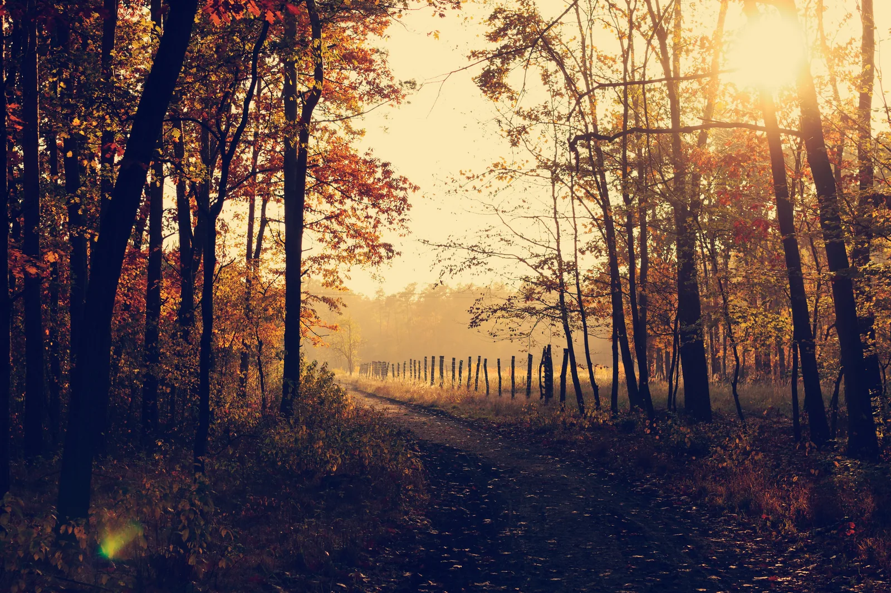
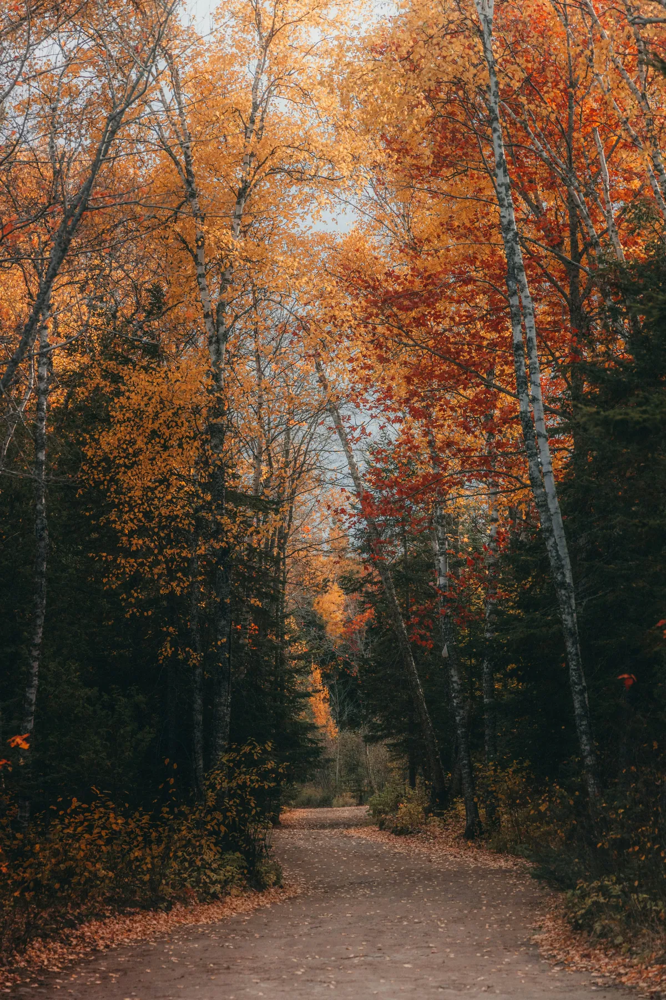
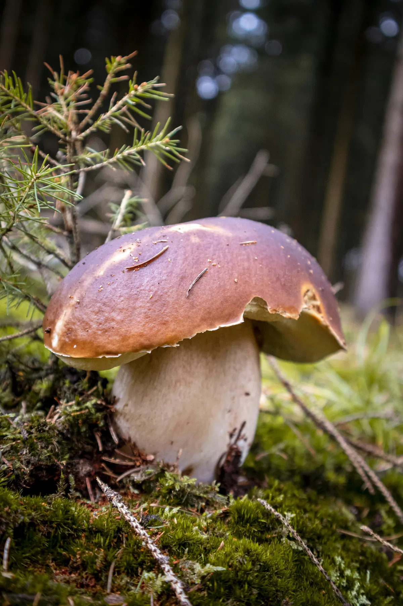
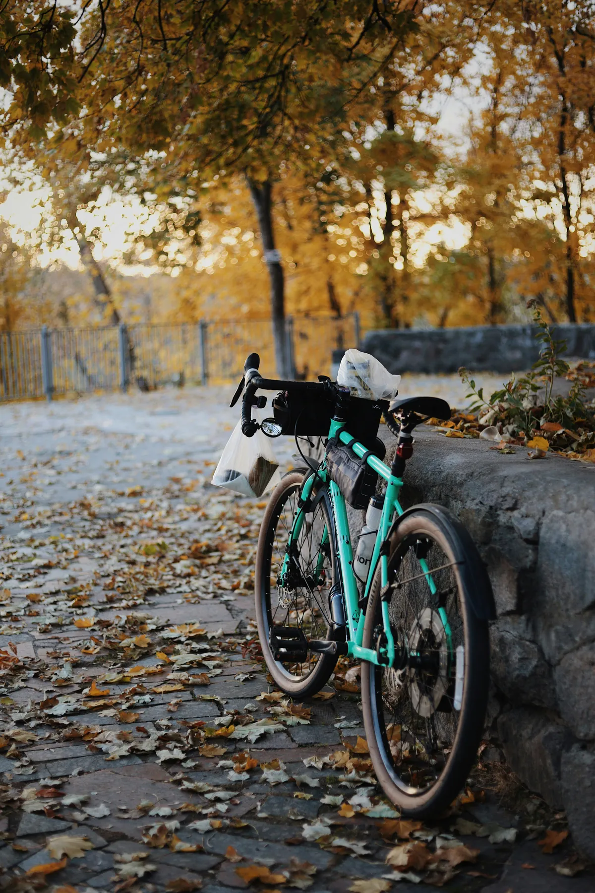

Firm roads, cool air, yellow forest, nobody about
The best gravel riding in Oslo happens after the tourists go home. From the middle of September the dust of high summer is gone, the forest roads north of the city pack down firm and fast, and the birch turns the whole of the Nordmarka yellow for about three weeks. The air sits somewhere around five to twelve degrees, which is close to ideal once you are climbing. And the roads are quiet in a way they never are in July.
Most visitors treat Oslo as a summer city. That is a mistake if you ride.
The Marka turns from the top down and from the north inwards. The birch goes first and goes hardest, a flat wash of yellow through the understory, while the spruce stays dark green and gives the whole thing its contrast. Aspen and rowan add the orange and red.
In a normal year the change starts in the second half of September and holds into the middle of October. It moves with the first properly cold nights, so it can arrive a week early or a week late. The practical version: if you are riding in mid-September, go north and high, up towards Kikut and the lakes, where it turns first. If you are riding in the second half of October, stay lower, around Maridalen and the valley floor, where the last of it hangs on.
Nordmarka gravel in July can get loose and dusty on the well-used sections,. After the first autumn rains the surface packs down. It gets firm, quick and grippy, and you can hold a line through corners that were skittery two months earlier.
Cooler air helps more than it sounds. The Marka is not flat, and the long drags up from Sognsvann are far more pleasant at eight degrees than at twenty-six.
Two things do get worse. Wet leaves sitting over roots and rock are genuinely slippery, especially on the narrower connections between forest roads. And ruts hold standing water after heavy rain, so what looks like a shallow puddle is sometimes not. Neither is a reason to stay home. Both are a reason to run slightly lower pressure and take the corners wider than you would in August.

A bike is an unreasonably good tool for foraging, and almost nobody uses it that way.
Most people who come out to pick walk in from the same handful of car parks and trailheads. By the middle of September the ground within an hour on foot of those points has been worked over thoroughly. On gravel you cover that same distance in ten minutes and then keep going. Fifteen or twenty kilometres in, the mossy spruce edges and the clearings just off the road have barely been touched all season.
Norway's right to roam covers you here: picking mushrooms and berries on uncultivated land is free and legal. Steinsopp, kantarell and traktkantarell all grow in the forest north of Oslo, and the season runs from roughly August into October.

One rule, and it is not up for negotiation: do not eat anything you have not had identified by someone who knows. Norway has species that will kill you, and several of them look thoroughly ordinary in a basket. Volunteer mushroom-checking stations, soppkontroll, run around Oslo through the season and will go through what you have picked for free. Use one. If you cannot get to a check, leave it in the forest.
Bring a basket or paper bag rather than plastic, which sweats, and leave space in a bar bag or frame bag before you set off.
Oslo loses light quickly in October. At the start of the month the sun sets just before seven in the evening. By the end of it, sunset is at 16:27, and the day has shrunk from about eleven and a half hours to under nine. The clocks go back on 25 October 2026, which takes a full hour off the end of the afternoon overnight.
The forest has no lighting anywhere. Under spruce cover it is dark well before the official sunset, and a gravel road you know perfectly well in daylight becomes a different problem at dusk. Carry a front and a rear light on any ride that starts after lunch, even one you expect to finish early. Riders who get caught out in the Marka are almost never caught out by cold. They are caught out by the light going.
Plan backwards from sunset rather than forwards from your start time, and give yourself an hour of margin.
Layers you can shed, not one warm jacket. A base layer, a jersey and a packable wind shell cover most autumn days in the Marka. Long-fingered gloves matter more than anything else, because your hands go first on a long descent, and something over your ears once you are into October.
Bring a dry layer for after. You will be warm while climbing and cold within four minutes of stopping.
Two of our pickup points are better than the rest in autumn, and they are better for opposite reasons.
From Kjelsås, at the end of tram line 11, you are into Maridalen within minutes and riding along the water. This is the low route, gentle gradients and open valley, and it is where the colour holds longest once the higher ground has already dropped its leaves. In late October, when the high ground is already bare, this is the ride that still delivers.
From Huseby, two minutes from Montebello on metro line 3, you get the opposite: the quiet way in. Follow Mærradalen up the valley to Bogstad, roughly six kilometres and a hundred metres of climbing on gravel, then continue into Sørkedalen and the western side of the forest. Hardly anybody starts from this side. If the mushroom section above appealed to you, this is where to go, because the ground out here sees a fraction of the foot traffic that the northern trailheads do.
Sognsvann is still there, and Ring 4 remains the classic 45 km loop with a waffle stop at Kikutstua. It is also the busiest way in, which matters more in autumn than in July.
We rent gravel bikes and e-bikes right through the autumn, and collection at Kjelsås or Huseby is included in the price. Both put you on gravel within minutes rather than after half an hour of city riding, which matters when the useful daylight has shrunk to a few hours.
Pricing is tiered by length: the first day costs NOK 899 and every day after that costs less. That suits autumn particularly well, because the weather here rewards patience. With a bike for four or five days you can sit out a wet morning and ride the clear afternoon instead of committing to one fixed date and hoping. Take the bags too if you plan to forage, and they come free on rentals of seven days or more.

A helmet comes with every rental. If you would rather have somebody show you the way through the forest the first time, our guided forest tours run in autumn too.
Gravel bikes and e-bikes from NOK 899 for the first day and less for every day after, collected at Kjelsås or Huseby with the forest a few minutes away.
Bike rental in OsloUsually from the second half of September into the middle of October, though it shifts by a week or two each year depending on the first cold nights. The higher ground north of Sognsvann turns before the lower valleys, so if you are early, ride deeper into the forest, and if you are late, stay low around Maridalen.
No. Daytime temperatures in the Marka in October usually sit somewhere between about 5 and 12 degrees, which is close to ideal for climbing on gravel. The cold you notice is on the descents and at stops, so pack a wind shell and long-fingered gloves rather than a heavier jacket.
Yes, and this matters more than people expect. There is no lighting anywhere on the forest roads, and under spruce cover it gets dark well before the official sunset. In October the sun sets at about 18:53 at the start of the month and 16:27 at the end. Carry a front and a rear light on any afternoon ride.
The main forest roads drain well and stay firm and fast, often better than in the dust of high summer. What does change is the surface on top: wet leaves over roots and rock are slippery, and ruts hold standing water after heavy rain. Ride a little wider on the corners and you will be fine.
Yes. Norway's right to roam lets you pick mushrooms and berries freely on uncultivated land, and steinsopp, kantarell and traktkantarell all grow in the forest north of Oslo from roughly August into October. Riding rather than walking gets you well past the ground near the trailheads that is picked over by mid-September. Never eat anything you have not had identified: free volunteer soppkontroll stations run around Oslo through the season.
Yes. We rent gravel bikes and e-bikes right through the autumn, from NOK 899 for the first day with every day after that costing less. Collection at Kjelsås or Huseby is included in the price and puts you on gravel within minutes, and a helmet comes with every rental.